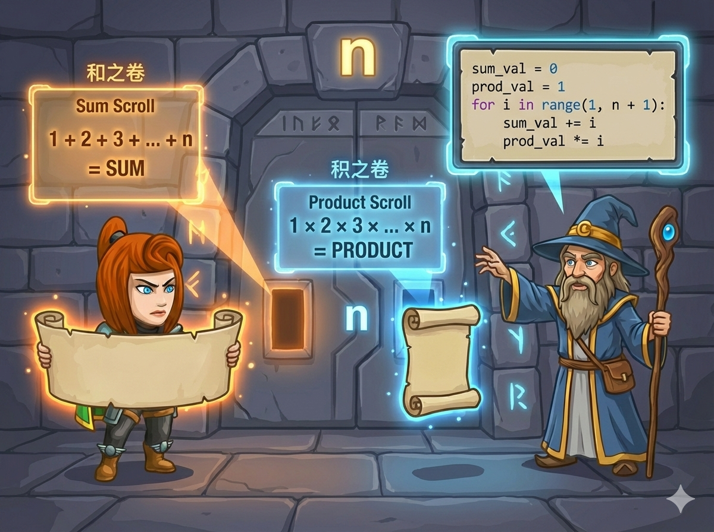

英雄进入了神秘的“双卷石室”。为了解开封印，你需要同时计算两个卷轴上的数值：
👉 任务： 输入一个整数 n，在同一个循环中计算出这两个值，并分两行输出。
我们不需要写两个循环，因为它们都是从 1 到 n 遍历。我们可以在一次遍历中同时完成两项工作。
1 × 2 × ... × 20 是一个非常巨大的数字！
普通的 int 存不下这么大的数，会发生“溢出”。
🚀 解决办法： 积变量 p 必须使用 long long 类型。
题目要求算到 n，所以 range 必须写成 range(1, n + 1)。
记住：Python 的 range 是“包头不包尾”的。
注意 long long 的使用，防止乘积爆炸。
#include <iostream> using namespace std; int main() { int n; cin >> n; long long s = 0; // 和，初始为 0 long long p = 1; // 积，初始为 1 (重要！) // 一个循环，两份工 for (int i = 1; i <= n; i++) { s += i; // 累加 p *= i; // 累乘 } cout << s << endl; // 第一行输出和 cout << p << endl; // 第二行输出积 return 0; }
简单直接，注意 range 的边界。
# 读入 n n = int(input()) s = 0 # 和，初始为 0 p = 1 # 积，初始为 1 # 循环 1 到 n (包含 n) for i in range(1, n + 1): s += i # 累加 p *= i # 累乘 print(s) print(p)